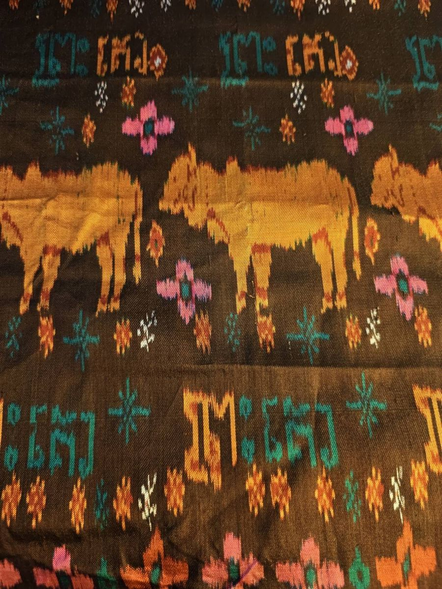

สมปตโฮล
Sampot hol · សំពត់ហូល
ผ้านุ่งไหมมัดหมี่เส้นพุ่ง ใส่ในงานแต่งงานและงานบุญ ทอลายสองไม่เท่ากันแบบ 1/2 บนสามตะกอ สีหนึ่งจึงเด่นด้านหน้า อีกสีเด่นด้านหลัง ลายโฮลที่มีชื่อเรียกมีมากกว่า 200 ลาย
Warp and Weft · អំបោះបញ្ឈរ អំបោះទទឹង
ผ้าไหม การทอ และเลขคณิตในเนื้อผ้า กี่นี้กำลังทอผ้าไหมเขมรของแนน ทีละเส้นพุ่ง จากแบบที่วาดด้วยโค้ด
กี่
เส้นยืนขึงตึงตามความยาวของกี่ เส้นพุ่งสอดขวางผ่าน ข้ามบางเส้น ลอดบางเส้น เส้นไหนจะยกขึ้นขึ้นอยู่กับตะกอ คือกรอบที่ยกเส้นยืนชุดหนึ่งขึ้นเมื่อช่างทอเหยียบไม้เหยียบ
แบบทอเขียนเรื่องนี้เป็นตารางสามชุด ด้านบน: เส้นยืนแต่ละเส้นร้อยผ่านตะกอไหน มุมขวาบน: ไม้เหยียบแต่ละอันยกตะกอไหน ด้านขวา: เส้นพุ่งแต่ละเส้นใช้ไม้เหยียบอันไหน ผ้าคือผลคูณของทั้งสาม เส้นยืนโผล่ตรงที่ไม้เหยียบยกตะกอของเส้นนั้น แตะช่องไหนก็ได้เพื่อเปลี่ยน
cloth[pick][warp] = tie-up[shaft(warp)][treadle(pick)]
คณิต
ปี 1804 โจเซฟ มารี ฌากการ์ แขวนสายบัตรเจาะรูไว้บนกี่ บัตรหนึ่งใบต่อเส้นพุ่งหนึ่งเส้น รูหนึ่งรูต่อเส้นยืนที่ต้องยก ชาลส์ แบบเบจ ยืมบัตรนี้ไปใช้กับเครื่องวิเคราะห์ของเขา และปี 1843 เอดา เลิฟเลซ เขียนว่าเครื่องนั้น
“weaves algebraical patterns just as the Jacquard loom weaves flowers and leaves.”
“ทอลวดลายพีชคณิต เหมือนกี่ฌากการ์ทอดอกไม้และใบไม้”
ช่างทอในไทย ลาว และกัมพูชา ก็เก็บลายไว้เหมือนกัน สำหรับผ้าขิดและผ้าเสริมเส้นพุ่ง ช่างทอเก็บลายครั้งแรกด้วยไม้เก็บลาย แล้วบันทึกแต่ละแถวเป็นเขาเชือกแขวนเหนือกี่ ยกตามลำดับ ลายก็ซ้ำ ส่งต่อให้ช่างทอคนอื่น ลายก็เดินทางไปด้วย
ผ้าต่วนขัดเส้นยืนแต่ละเส้นหนึ่งครั้งในทุก n เส้น ขยับไป k ช่องทุกแถว จุดขัดจึงไม่ติดกัน เส้นที่ลอยยาวจึงเป็นมันวาว ใช้ได้เมื่อ k กับ n ไม่มีตัวหารร่วม และ k ไม่ใช่ 1 หรือ n−1 ลอง 4 กับ 6 ดู ไม่มีก้าวไหนใช้ได้เลย
ลายขอบคือการซ้ำลายหนึ่งไปตามแนวเส้น นับการเลื่อน การพลิก และการหมุนครึ่งรอบ มีวิธีทำได้เจ็ดแบบพอดี จอห์น คอนเวย์ ตั้งชื่อตามรอยเท้า: กระโดด ก้าวเดิน ก้าวข้าง กระโดดสองเท้า และแบบหมุน วาดลายในช่องสี่เหลี่ยม ลายขอบทั้งเจ็ดจะเปลี่ยนตาม
มัดหมี่
อิกัต มาจากคำมลายูและอินโดนีเซียที่แปลว่ามัด คือการย้อมลายก่อนทอ มัดปอยด้ายให้แน่นตรงที่ไม่ให้สีเข้า จุ่มย้อม แก้มัด มัดใหม่ แล้วย้อมอีก ในกัมพูชาเรียกการมัดว่า จองเกียต แปลว่า “มัดเชือก” และเรียกผ้าไหมมัดเส้นพุ่งว่าโฮล ในไทยเรียกว่ามัดหมี่ พอทอ เส้นที่ย้อมแล้วแต่ละเส้นเหลื่อมจากเส้นข้าง ๆ นิดหนึ่ง ขอบลายจึงฟุ้งเหมือนขนนก
ช่างทอมักมัดปอยที่พับไว้ครั้งเดียว ได้ลายสมมาตรทั้งสองซีก
ผ้าคลุมไหล่
ผ้าโฮลไหมเขมร เป็นมัดหมี่ทั้งผืน ทุกสีมัดและย้อมลงในเส้นพุ่งก่อนทอ เนื้อไหมเป็นแบบซานตุง ผิวสัมผัสเป็นปุ่มปมจากเส้นด้ายที่มีช่วงหนาช่วงบาง บนผ้ามีวัวมีหนอกสีทอง ดอกไม้ชมพูกับเขียวหัวเป็ด และแถวอักษรเขมรที่ทอไว้ คำสีทองอ่านว่า គោ (โก) แปลว่า “วัว” ภาพวาดใหม่คือแบบขนาด 72 × 104 ช่อง เลื่อน “เหลื่อม” ไปที่ศูนย์ จะเห็นแบบตอนมัด เลื่อนขึ้นจะเห็นขอบฟุ้งของการมัดย้อม “ปุ่มปม” เพิ่มเส้นด้ายหนาบาง

กัมพูชา
Sampot hol · សំពត់ហូល
ผ้านุ่งไหมมัดหมี่เส้นพุ่ง ใส่ในงานแต่งงานและงานบุญ ทอลายสองไม่เท่ากันแบบ 1/2 บนสามตะกอ สีหนึ่งจึงเด่นด้านหน้า อีกสีเด่นด้านหลัง ลายโฮลที่มีชื่อเรียกมีมากกว่า 200 ลาย
Pidan · ពិដាន
ผ้าโฮลภาพเล่าเรื่อง แขวนเหนือแท่นบูชาและเครื่องบูชา มีลายปราสาท พระพุทธรูป นาค ช้าง สิงห์ และแถวผู้คน ชื่อนี้คือคำเขมรที่แปลว่าเพดาน
Golden silk · សូត្រមាស
หนอนไหมพื้นเมืองของกัมพูชาปั่นรังสีเหลือง ปี 1996 คิคุโอะ โมริโมโตะ ช่างย้อมกิโมโนจากเกียวโต ก่อตั้งสถาบันสิ่งทอพื้นเมืองเขมร รวบรวมช่างทอสูงวัยที่ยังรู้วิชา แล้วปลูกหม่อนกับต้นไม้ให้สีย้อม สถาบันทำงานอยู่ที่เสียมราฐ
Weaving villages · ភូមិត្បាញ
จังหวัดตาแก้ว ทางใต้ของพนมเปญ ขึ้นชื่อเรื่องผ้าไหม ส่วนเกาะดาจ เกาะกลางแม่น้ำโขงเหนือตัวเมืองขึ้นไปไม่ไกล มีกี่ทอผ้าอยู่ใต้ถุนบ้าน
ไทย
Mudmee · ម៉ាត់មី
มัดหมี่ของอีสาน มีทั้งไหมและฝ้าย ตั้งแต่ผ้าไหมเนื้อดีสำหรับงานพิธี ไปจนถึงผ้าซิ่นฝ้ายใส่ทุกวัน ลายมัดเป็นปอย และหลายลายมีชื่อ เช่น ลายนาค ลายขอ ลายต้นสน
Khit · ខិត
การเสริมเส้นพุ่งแบบต่อเนื่อง ด้ายพิเศษวิ่งจากริมผ้าด้านหนึ่งไปอีกด้านบนเนื้อผ้าพื้น ยกด้วยไม้เก็บขิดให้เป็นลายข้าวหลามตัด ขอ และนาค หมอนขิดสามเหลี่ยมของอีสานคือชิ้นที่คุ้นตาที่สุด
Jok · ចក
การเสริมเส้นพุ่งแบบไม่ต่อเนื่อง ใช้ปลายนิ้วหรือขนเม่นควักด้ายสีเข้าทีละหย่อม ตีนจก คือเชิงผ้าซิ่นไทยวนที่ทอลายจก เป็นความภูมิใจของแม่แจ่ม จังหวัดเชียงใหม่
Prae wa · ផ្រែវ៉ា
ผ้าสไบของชาวผู้ไทกาฬสินธุ์ ลายเสริมเส้นพุ่งแน่นเต็มผืนบนพื้นสีแดง คนไทยเรียกว่าราชินีแห่งผ้าไหม
Peacock marks · ត្រាក្ងោក
ตรานกยูงสี่สีแบ่งชั้นผ้าไหมไทย สีทอง ไหมพันธุ์พื้นบ้าน ทำมือทุกขั้นตอน ย้อมสีธรรมชาติ สีเงิน ทำมือแต่ใช้เครื่องมือสมัยใหม่บางขั้น สีน้ำเงิน ไหมแท้ ทำด้วยวิธีใดก็ได้ สีเขียว ไหมผสม
Revival · ការស្តារ
หลังสงครามโลกครั้งที่สอง จิม ทอมป์สัน ชาวอเมริกัน ทำให้ผ้าไหมไทยเป็นสินค้าส่งออกที่มีชื่อในต่างประเทศ เขาหายตัวไปที่คาเมรอนไฮแลนด์ ประเทศมาเลเซีย ในปี 1967 ปี 1976 (พ.ศ. 2519) สมเด็จพระนางเจ้าสิริกิติ์ พระบรมราชินีนาถ พระบรมราชชนนีพันปีหลวง ทรงก่อตั้งมูลนิธิส่งเสริมศิลปาชีพ ฝึกช่างทอในหมู่บ้านและรับซื้อผ้า
หนอนไหม
หนอนไหม (Bombyx mori) อยู่กับมนุษย์มาหลายพันปี จนไม่มีในป่าแล้ว หนอนกินแต่ใบหม่อน และหนักขึ้นราวหนึ่งหมื่นเท่าในเวลาไม่ถึงเดือน จากนั้นชักใยสองถึงสามวัน ส่ายหัวเป็นเลขแปด วางเส้นใยเส้นเดียวไม่ขาด ยาวราว 900 เมตร ผีเสื้อไหมบินไม่ได้
หนอนไหมพันธุ์พื้นบ้านไทยและเขมรตัวเล็ก ชักใยเป็นรังสีทอง และเลี้ยงได้หลายรุ่นต่อปี สาวด้วยมือ ได้เส้นไหมเส้นโตไม่สม่ำเสมอ
ตำนานจีนเล่าว่า เหลยจู่ ชายาของจักรพรรดิเหลือง พบไหมเมื่อรังไหมตกลงในถ้วยชาแล้วคลายออกเป็นเส้น
เส้นทางสายไหม
ผ้าไหมเดินทางไปตะวันตกกับกองคาราวานจากฉางอาน ผ่านเมืองโอเอซิส และทางทะเลผ่านเมืองท่าของเอเชียตะวันออกเฉียงใต้ ออกแอว เมืองท่าของฟูนันในสามเหลี่ยมปากแม่น้ำโขงปัจจุบัน ขุดพบเหรียญโรมันและลูกปัดอินเดีย แฟร์ดีนันท์ ฟอน ริชท์โฮเฟิน นักภูมิศาสตร์ชาวเยอรมัน ตั้งชื่อเส้นทางสายไหมในปี 1877 ราวปี 552 นักบวชซ่อนไข่ไหมในไม้เท้ากลวงนำไปถึงคอนสแตนติโนเปิล ไบแซนไทน์จึงเริ่มผลิตไหมเอง
สีทอง: เส้นทางคาราวาน สีฟ้าอ่อน: เส้นทางทะเล สีชมพู: เชียงใหม่
วาด
แต่ละลายคือสูตรเดียวบนตารางจุดขัด ทอด้วยการเหลื่อมแบบเดียวกับมัดหมี่ ข้าวหลามตัดวัดระยะแบบรถแท็กซี่วิ่งตามถนนตาราง นาคพับแถวเป็นซิกแซก สามเหลี่ยมปาสกาลที่เก็บเฉพาะเลขคี่วาดเป็นสามเหลี่ยมเซียร์ปินสกี หรือพิมพ์ชื่อ
แหล่งข้อมูล
แผนที่: Natural Earth ภาพผ้าคลุมไหล่: แนน ผ้าทุกผืนบนหน้านี้วาดในเบราว์เซอร์ด้วย docs/weave.js